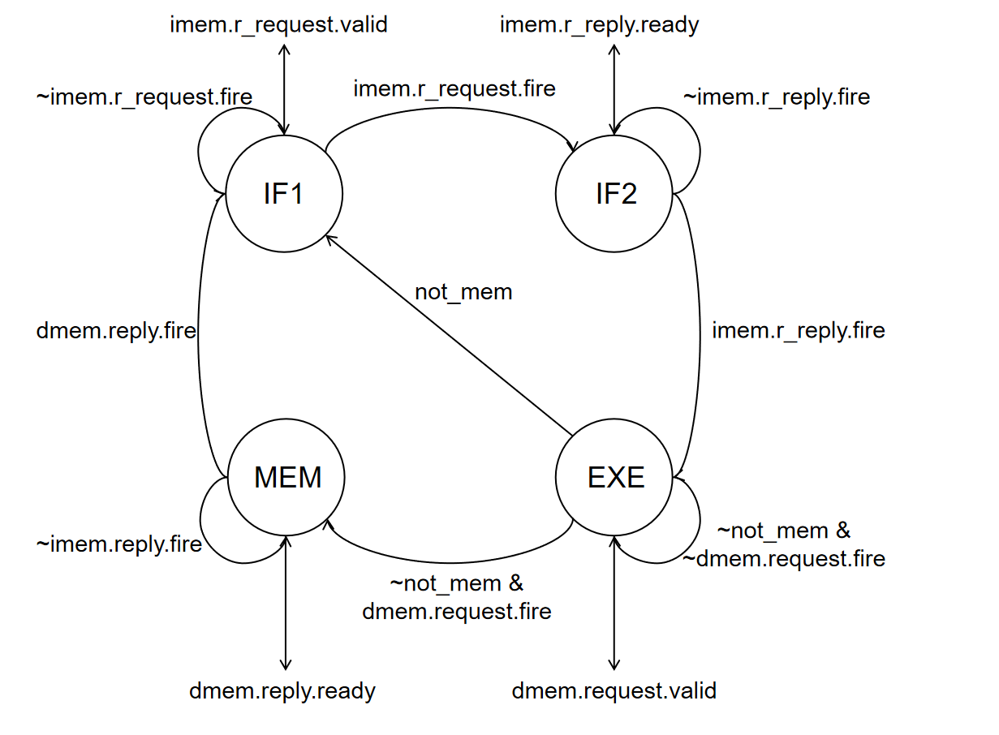
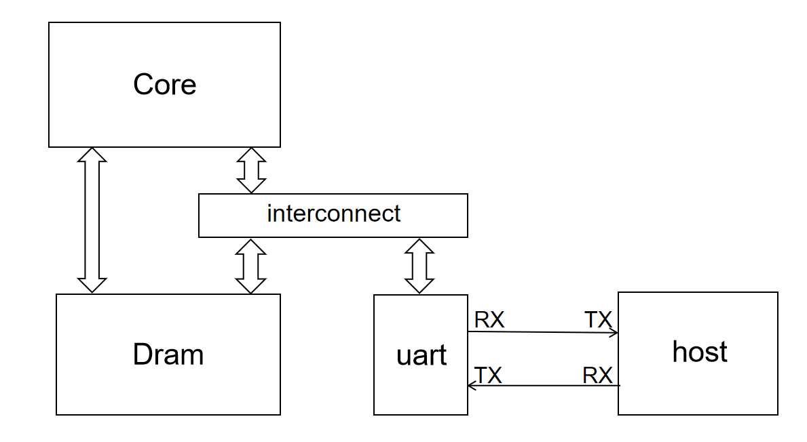

project：多周期处理器（bonus）¶
实验目的 ¶
- 尝试实践内存总线握手协议
- 学习实践多周期处理器的控制状态机设计方法
- 学习实践 mmio 的外设管理方法和串口驱动
实验环境 ¶
- 操作系统：Windows 10+ 22H2，Ubuntu 22.04+
- VHDL：Verilog，SystemVerilog
背景知识 ¶
内存总线握手协议 ¶
在 project-1 中我们介绍了自行设计的内存总线 mem_ift，本实验我们会介绍该总线的具体用法。
在真实的计算机系统中，我们会有各种的主设备和从设备，主设备向从设备发出读写请求，然后获得读写结果。主设备和从设备的种类数多种多样的，常见的主设备有处理器核心，常见的从设备有内存、串口等，甚至有些设备既可以作为主设备、也可以作为从设备，比如显卡、网卡、总线互联等。各类设备的工作模式、硬件实现、内部协议都是互不相同甚至大相径庭的，如果我们为任何一个主从设备都定制专门的连接，这个设计开销是巨大的，所以我们定义了总线协议和总线接口。主设备实现遵守总线协议的主总线接口，从设备实现遵守总线协议的从总线接口，这样任何主从设备之间都可以直接用总线串联，然后正常工作。
我们介绍一下 mem_ift 的总线握手协议，让同学们对于总线协议有一个简单的认识，实际使用的总线协议因为实际需求更多，所以会有更复杂的实现和更强大的功能。
-
读请求：
- Master 设备将要访问的地址放到 r_request_bits.raddr 上，待地址数据稳定后，将 r_request_valid 设置为 1
- Slave 设备在可以接受读请求的时候将 r_request_ready 设置为 1
-
当 r_request_valid & r_request_ready 的时候，说明握手成功
-
Master 发送请求成功，关闭请求或者发送下一个请求，在可以接受读返回数据之后，将 r_reply_ready 设置为 1
- Slave 接收到 Master 的请求之后根据 r_request_bits.raddr 的地址获得对应的数据，然后放置到 r_reply_bits.rdata 上，如果访问成功将 r_reply_bits.rresp 设置为 OKAY，反之设置为 SLVERR。待数据稳定后，将 r_reply_valid 设置为 1
-
当 r_reply_valid & r_reply_ready 的时候，说明握手成功
-
Master 接收 Slave 返回的结果，关闭 ready 或者等待接收下一个返回结果
- Slave 关闭数据响应或者准备发送下一个读请求的结果
-
写请求：
- Master 设备将要写入的地址、数据、字节使能放到 w_request_bits.waddr、wdata、wmask 上，待地址数据稳定后，将 w_request_valid 设置为 1
- Slave 设备在可以接受写请求的时候将 w_request_ready 设置为 1
-
当 w_request_valid & w_request_ready 的时候，说明握手成功
-
Master 发送请求成功，关闭请求或者发送下一个请求，在可以接受读返回数据之后，将 w_reply_ready 设置为 1
- Slave 接收到 Master 的请求之后根据 w_request_bits.waddr、wdata、wmask 进行对应的写操作，如果地址合法且写入成功将 w_reply_bits.rresp 设置为 OKAY，反之设置为 SLVERR。待数据稳定后，将 w_reply_valid 设置为 1
-
当 w_reply_valid & w_reply_ready 的时候，说明握手成功
-
Master 接收 Slave 返回的结果，关闭 ready 或者等待接收下一个返回结果
- Slave 关闭数据响应或者准备发送下一个写请求的结果
简单来说，Master 和 Slave 通过 request 通道握手，Master 将 request 的信息发送给 Slave；然后再通过 reply 通道握手，Slave 将 reply 的信息发送给 Master。Read 和 Write 的通道可以简单地认为相互不影响。需要注意，在没有发送 request 请求之前，理论上不应该有 reply 响应。
Slave 发送 request 的请求之后，Master 一般至少下一个周期才可以返回 reply 结果，所以在内存总线的场景下处理器的一次内存访问是多周期的，最少一个周期的 request、一个周期的 reply。但是实际上 Slave 和 Master 的 request 握手本身可能需要若干个周期，Slave 处理数据内容也需要大量周期，最后 Slave 和 Master 的 reply 握手又需要大量的周期，这就导致实际上一次内存访问需要几十甚至上百周期。
实际上内存访问多周期并不是总线引入的，而是 Slave 设备本身引入的，比如我们的 core 如果不用专门定制的（实际不存在的）dram 进行一周期的读写操作，而是用常见的 sram 或者 ddr，则可能需要 10-50 个周期才可以获得一次数据。恰恰相反，因为内存总线的存在使得 Slave 设备的访问控制变得简单，我们可以忽略每个设备复杂的驱动协议，仅仅通过总线握手和等待就可以得到正确的执行结果。
多周期处理器 ¶
真实的处理器在处理一条指令的时候，取指、译码、执行、访存、写回的每个操作可能都需要很多个时钟周期。例如取指和访存操作需要访问内存，而内存访问需要总线握手和内存处理，可能要等待几十个到上百个周期；译码如 x86 需要作微码转换、解码等操作，又需要很多周期；执行简单的指令如加法、移位可能只需要一个周期，但是复杂的指令操作如乘法、除法、同步等需要几十上百个周期；写回有时候可能也要多周期。所以处理器的一条指令分多个周期执行完成是很正常。
为了让处理器可以有条不紊的用多个周期处理一条指令，我们需要设计一个控制多周期处理器工作的有限状态机，它可以在不同的状态控制不同的处理器部件工作，以确保指令正确执行，各个部件不冲突。本实验的指令除了访存都只需要执行一个周期，所以我们可以简单设计如下的有限状态机：
- IF1：发送 imem 内存的读请求，等待读请求握手达成。握手成功进入 IF2 状态
- IF2：等待 imem 内存的读响应，等待读响应握手达成。握手成功，获得待执行的指令，进入 EXE 状态
- ID-EXE：对指令译码，如果不是访存指令，就执行计算并写回计算结果，进入 IF1 状态，开始执行下一条指令；如果是访存指令，发送 dmem 内存的读写请求，等待读写请求握手达成，握手成功进入 MEM 状态
- MEM：等待 dmem 的读写相应，握手成功将读到的数据写入寄存器组，然后返回 IF1 状态开始执行下一条指令

所以如果我们想在单周期处理器的基础上实现多周期处理器，需要进行如下的修改：
- 设置一个有限状态机，做状态的转换
- 增加新的控制信号或者修改控制信号
- stall 信号，当一条指令没有执行完毕时，PC 保持不变
- we_reg 信号，当一条指令没有执行完毕时，寄存器组不写回
- mem_ift 信号，在不同的接口发送不断的请求、响应握手信号
- 增加中间寄存器，保存必要的结果
- inst 寄存器，当 imem 响应实现时将返回的 inst 写入寄存器
- 其他有必要的修改
可以参考submit/Core.sv的 MultiFSM 的模块接口实现对应的有限状态机和控制信号。
memory-mapping I/O¶
我们之前提到，在一个体系结构中，处理器核心有多个从设备可以读写访问，比如内存、串口、加速器、PCIE 设备等等。对于内存，我们可以用 load-store 指令直接访问，但是对于串口等 IO 设备我们要怎么进行读写操作呢？
在 x86 等指令集中有特定的 in-out 指令，并且给每一个外设的可编程寄存器提供了专门的编号，然后就可以用in/out ID的形式来访问这些寄存器。因此 x86 有针对内存的 load-store 指令，同时兼有针对 IO 的 in-out 指令。但是这样就需要管理两套设备访问指令，无论是设备提供商还是软件开发者都是比较繁琐的。riscv 则采用 memory-mapping 的方式来解决这个问题。
in-out 是为每一个 IO 的可编程寄存器提供了一个编号进行访问，memory-mapping 则是从物理地址中划分了一部分，然后作为这些寄存器的地址。只要用 load-store 指令访问这些特殊的地址，就可以读写对应的 IO 寄存器，从而实现读 IO 的输入、提供 IO 的输出、设置 IO 的状态等一系列功能繁复的操作。memory-mapping I/O 的 load-store 读写的地址并不一定是真正的存储单元，可能是任何有效的硬件实现，具体的使用还是要看设备提供商提供的操作手册。
在本实验中，我们将串口封装为一个从设备，然后将它的状态、数据管理抽象为可编程读写接口： * 0x10000000-0x10000001：串口数据寄存器，宽度一字节。读这个寄存器可以得到串口接收到的字符：写这个寄存器可以让串口发送写入的字符。因为数据寄存器只有 8 位，所以写入的数据只有低八位有效。 * 0x10000001-0x10000002：串口状态寄存器，宽度一字节。读这个寄存器可以得到串口的工作状态：读到数据的最低位是 TX 的工作状态，如果是 1，则可以发送数据，如果是 0，则串口发送端处于繁忙；读到数据的次低位是 RX 的工作状态，如果是 1，则可以接受数据，如果是 0，则没有数据被接受。 * 如果读写的地址不合理，或者读写的时候 TX、RX 没有就绪，串口会返回 SLVERR 报告
我们来查看一个当前 SoC 的外围设计：

imem_ift 总线接口直接直连到 dram 的一号口，dmem_ift 总线经过 interconnect 的路由，根据输入地址的不同访问内存或者串口，物理地址分布如下：
- 0x00000000 - 0x00001000：dram 地址范围，仅在该地址范围访问内存有效
- 0x10000000 - 0x10000100：uart 地址范围，该范围仅 0x10000000-0x10000002 有效，其他访问返回 SLVERR
- other：无效地址范围，访问返回 DECERR
memory-mapping 根据地址访问各种不同的从设备依赖于复杂的 interconnection 连接来实现。
实验步骤 ¶
实验前准备 ¶
与之前的 lab 相同，启动安装在你电脑中的 Ubuntu 22.04 环境（ WSL 或虚拟机cd 移动到 sys1-sp24 目录下，执行下面的命令：
实现多周期 CPU ¶
根据 " 多周期处理器 " 一节实现submit/Core.sv的 MultiFSM 模块，并修改 core 的细节，将 core 转换为可以顺利执行的多周期处理器。之后执行make verilate TESTCASE=full，仿真测试，如果顺利结束可以证明执行正确。
然后执行make board_sim TESTCASE=full得到用于下板的执行文件 testcase.hex，然后修改include/initial_mem.hex的 FILE_PATH，用该 hex 修改处理器的内存的值。然后综合下板，如果处理器单步执行周期数合理（实验指导的状态及对应的非访存指令为 3 周期，访存指令为 4 周期，也可以是其他实现
执行串口收发 ¶
之前我们用回环测试的模块实现了串口收发，现在我们用处理器执行程序的方式来实现串口收发。该程序已经在sys-project/testcode/testcase/uart下实现，只要在 project 目录下执行make uart就可以编译该文件夹下的代码得到 testcase.hex，然后用该程序进行仿真测试。为了验证串口收发的正确性，我们在sys-project/sim提供了 sim_uart.sv 模块用于模拟 host 的串口收发，我们的处理器会和 host 共同实现回环测试。
测试通过后make bitstream下板验证即可，不要忘记设置 FILE_PATH。
为了便于大家硬件调试，在处理器下板之后，可以将开关sw[4:0]拨至10001来查看串口内部 state 寄存器和 data 寄存器的值。
实验报告 ¶
- 请在实验报告中详细描述每一步的过程并配有适当的截图和解释，对于仿真设计和上板验证的结果也应当有适当的解释和照片
细分：
- 多周期处理器的仿真通过
- 多周期处理器的下板测试
- 串口的仿真通过
- 串口的下板测试，终端显示自己的学号
-
阅读 uart 文件夹下的代码，解释处理器如何正确的进行串口的数据收发
-
使用处理器进行串口收发和使用 lab4-2 的 looptest 模块进行串口收发相比有什么优缺点？
-
尝试修改有限状态机，或者引入新的技术，对我们的多周期处理器的执行效率加以改进
代码提交 ¶
验收检查点 ¶
- 多周期处理器仿真展示
- 串口仿真展示
- 代码解释或设计思路
- 多周期处理器下板验证
- 串口下板验证
提交文件 ¶
src/project/ 中编写的 submit 和 include 的代码